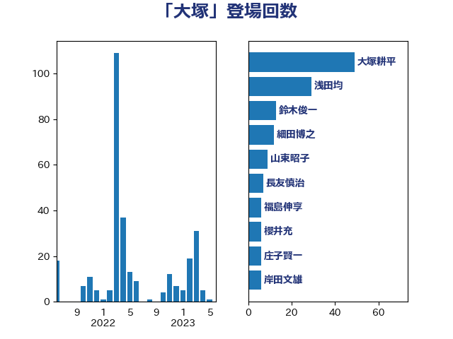

単語「大塚」

| 大塚耕平 | 国民民主党 | 49 回 |
| 浅田均 | 日本維新の会 | 29 回 |
| 鈴木俊一 | 自由民主党 | 13 回 |
| 細田博之 | 自由民主党 | 12 回 |
| 山東昭子 | 自由民主党 | 9 回 |
| 長友慎治 | 国民民主党 | 7 回 |
| 福島伸享 | 無所属 | 6 回 |
| 櫻井充 | 自由民主党 | 6 回 |
| 庄子賢一 | 公明党 | 6 回 |
| 岸田文雄 | 自由民主党 | 6 回 |
| 横沢高徳 | 立憲民主党 | 5 回 |
| 尾辻秀久 | 無所属 | 5 回 |
| 鬼木誠 | 立憲民主党 | 4 回 |
| 青木愛 | 立憲民主党 | 4 回 |
| 空本誠喜 | 日本維新の会 | 4 回 |
| 田村貴昭 | 日本共産党 | 4 回 |
| 林芳正 | 自由民主党 | 4 回 |
| 平口洋 | 自由民主党 | 4 回 |
| 西銘恒三郎 | 自由民主党 | 3 回 |
| 末松信介 | 自由民主党 | 3 回 |
| 大塚拓 | 自由民主党 | 3 回 |
| 中曽根弘文 | 自由民主党 | 3 回 |
| 青木一彦 | 自由民主党 | 2 回 |
| 長浜博行 | 無所属 | 2 回 |
| 金子恭之 | 自由民主党 | 2 回 |
| 野中厚 | 自由民主党 | 2 回 |
| 藤井一博 | 自由民主党 | 2 回 |
| 藤丸敏 | 自由民主党 | 2 回 |
| 芳賀道也 | 国民民主党 | 2 回 |
| 舟山康江 | 国民民主党 | 2 回 |
| 紙智子 | 日本共産党 | 2 回 |
| 神谷宗幣 | 参政党 | 2 回 |
| 柴愼一 | 立憲民主党 | 2 回 |
| 山口俊一 | 自由民主党 | 2 回 |
| 山下芳生 | 日本共産党 | 2 回 |
| 大島九州男 | れいわ新選組 | 2 回 |
| 住吉寛紀 | 日本維新の会 | 2 回 |
| 伊波洋一 | 無所属 | 2 回 |
| 上田清司 | 国民民主党 | 2 回 |
| 高良鉄美 | 無所属 | 1 回 |
| 馬場成志 | 自由民主党 | 1 回 |
| 鈴木貴子 | 自由民主党 | 1 回 |
| 赤嶺政賢 | 日本共産党 | 1 回 |
| 豊田俊郎 | 自由民主党 | 1 回 |
| 窪田哲也 | 公明党 | 1 回 |
| 神谷裕 | 立憲民主党 | 1 回 |
| 石井準一 | 自由民主党 | 1 回 |
| 田村まみ | 国民民主党 | 1 回 |
| 海江田万里 | 立憲民主党 | 1 回 |
| 浅尾慶一郎 | 自由民主党 | 1 回 |
| 松下新平 | 自由民主党 | 1 回 |
| 本田太郎 | 自由民主党 | 1 回 |
| 平木大作 | 公明党 | 1 回 |
| 岩本剛人 | 自由民主党 | 1 回 |
| 小田原潔 | 自由民主党 | 1 回 |
| 小山展弘 | 立憲民主党 | 1 回 |
| 室井邦彦 | 日本維新の会 | 1 回 |
| 堂込麻紀子 | 無所属 | 1 回 |
| 前川清成 | 日本維新の会 | 1 回 |
| 中西祐介 | 自由民主党 | 1 回 |
| 中曽根康隆 | 自由民主党 | 1 回 |
| 上杉謙太郎 | 自由民主党 | 1 回 |
| 三宅伸吾 | 自由民主党 | 1 回 |
| ながえ孝子 | 無所属 | 1 回 |